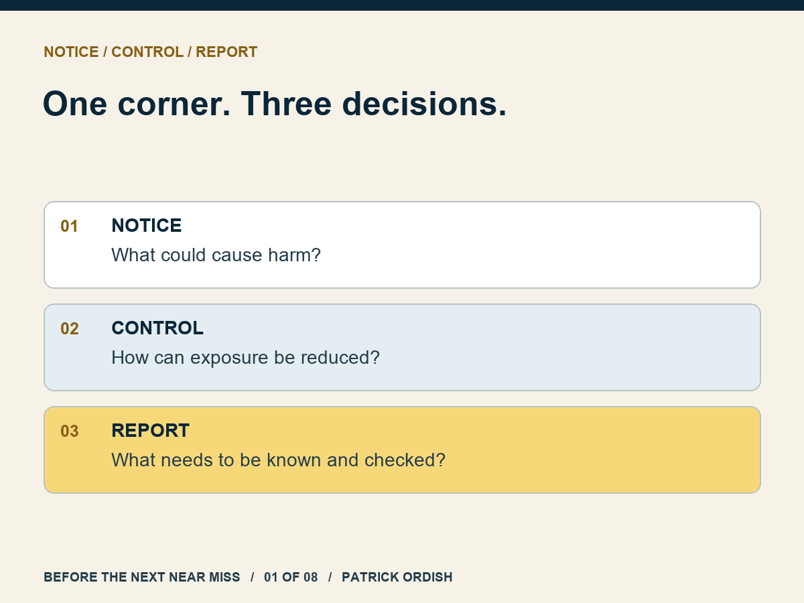
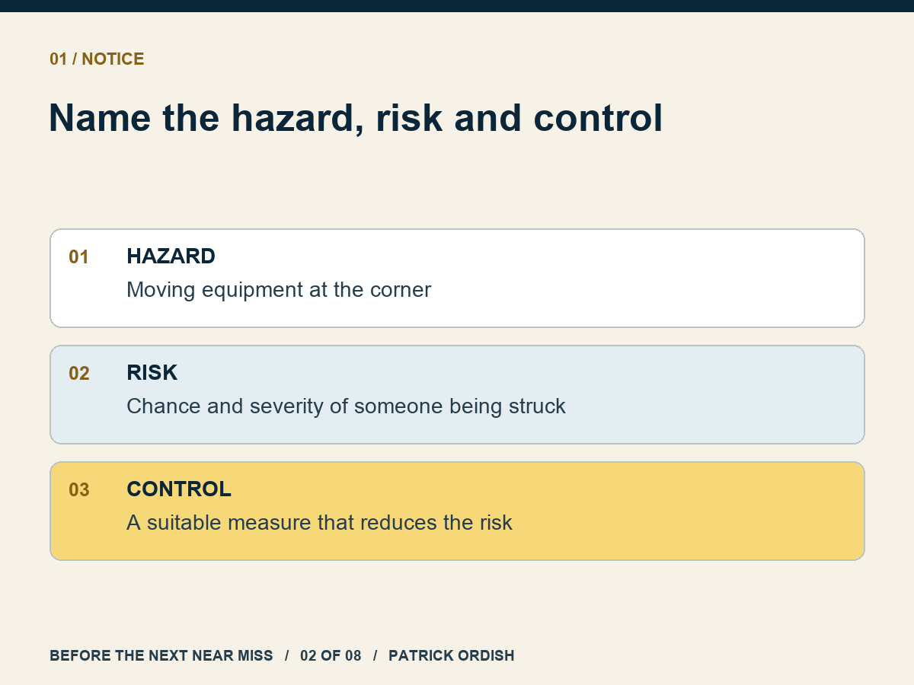
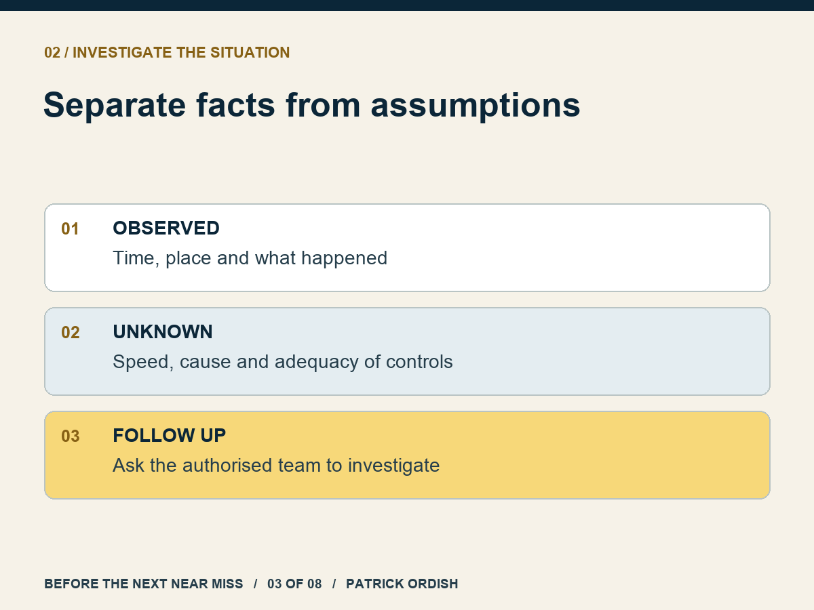
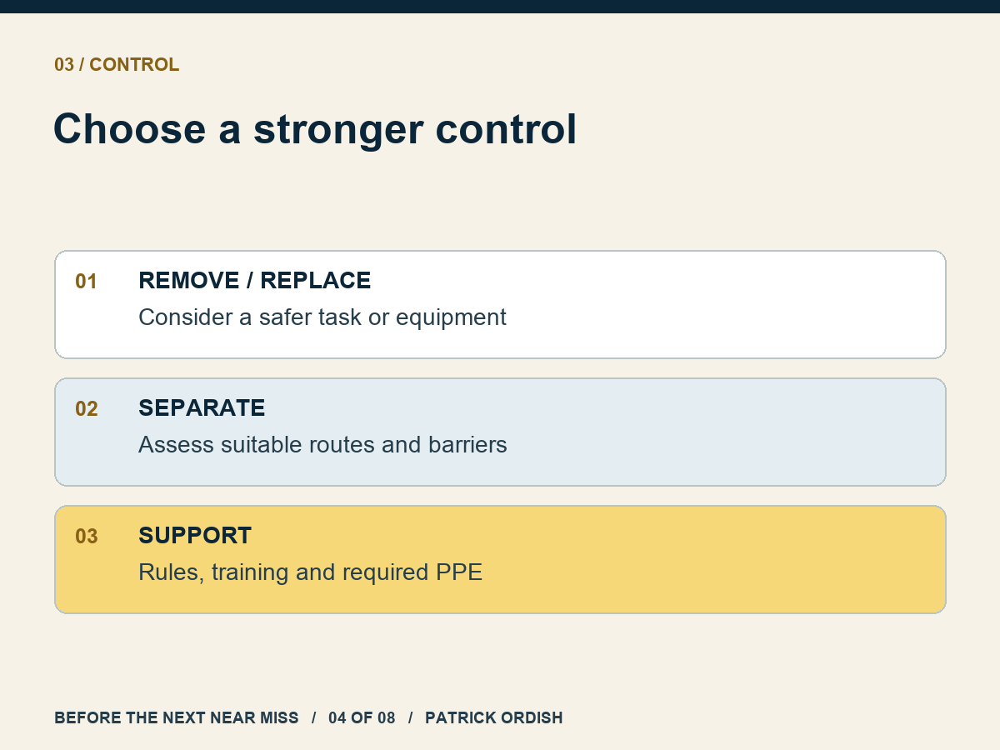
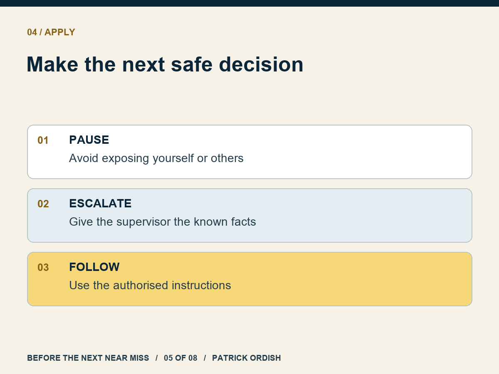
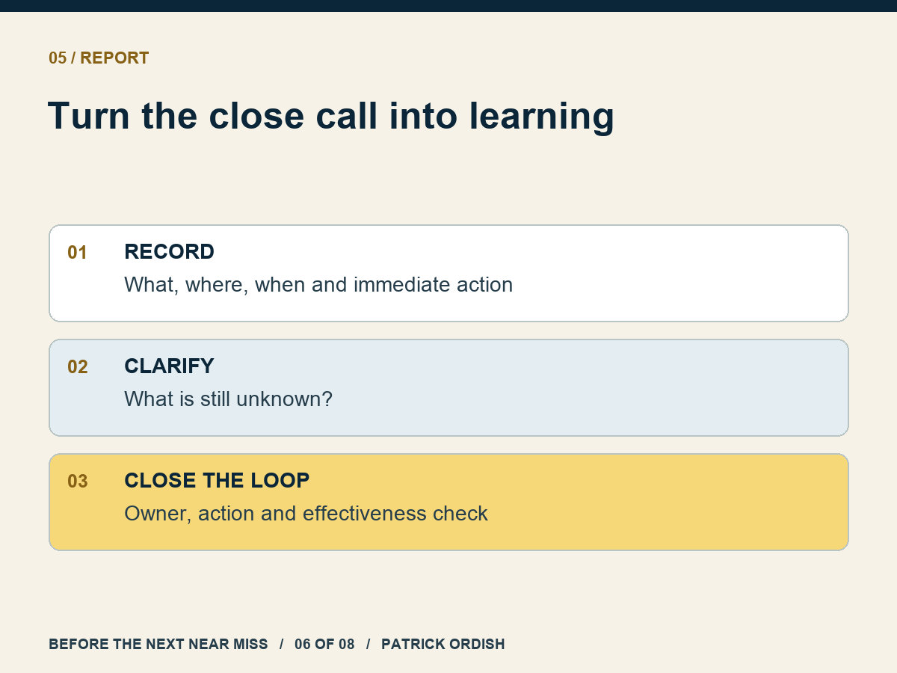
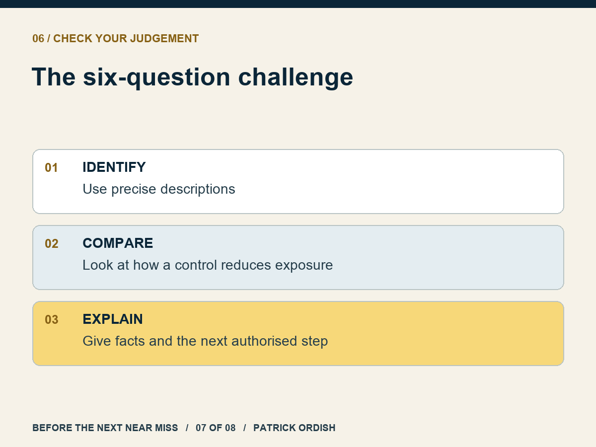
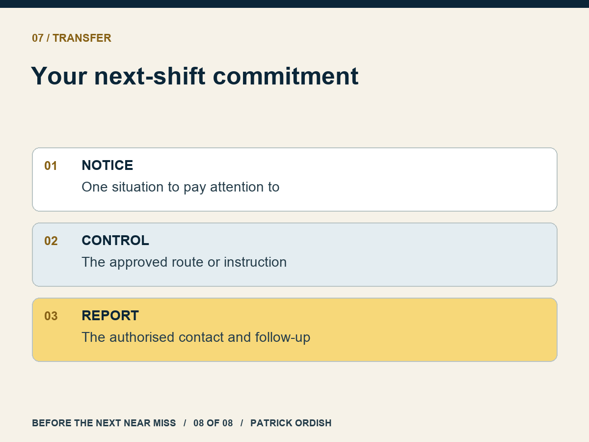

FIELD NOTE 01 / 08 · NOTICE / CONTROL / REPORT
One corner. Three decisions.
Optional page reader · UK English synthetic narration
Read the page-reader transcript
One corner. Three decisions.. At fictional Bay 4, a powered pallet truck and a pedestrian reach a blind corner at the same time. The truck stops before contact. Nobody is hurt. The next shift will use the same route. Your task is to recognise what needs attention, compare the available controls and make a useful factual report. This is a discussion exercise: follow your site instructions and the authorised person’s direction in real work. Allow 20–25 minutes. Three short videos already existed in the Synthesia library; they are reused unchanged, with new diagrams, decisions and reflection. Every page has optional uploaded narration. The video pages also provide the original spoken transcript. Diagram. NOTICE: What could cause harm?. CONTROL: How can exposure be reduced?. REPORT: What needs to be known and checked?. Activity. Before you continue, write one sentence: what should the next shift know about this corner? Keep it factual.
At fictional Bay 4, a powered pallet truck and a pedestrian reach a blind corner at the same time. The truck stops before contact. Nobody is hurt. The next shift will use the same route.
Your task is to recognise what needs attention, compare the available controls and make a useful factual report. This is a discussion exercise: follow your site instructions and the authorised person’s direction in real work.
Allow 20–25 minutes. Three short videos already existed in the Synthesia library; they are reused unchanged, with new diagrams, decisions and reflection. Every page has optional uploaded narration. The video pages also provide the original spoken transcript.

FIELD NOTE 02 / 08 · 01 / NOTICE
Name the hazard, risk and control
Optional page reader · UK English synthetic narration
Read the page-reader transcript
Name the hazard, risk and control. A clear description helps the right person decide what needs attention. Separate the source of harm from the possible outcome and from the protective measure. In the Bay 4 example, the moving truck at a blind corner is a hazard. A person being struck is a possible harm; risk considers how likely and serious that harm could be. A suitable barrier and separate route are controls. Watch the existing 55-second video or read its transcript. Then answer the practice question. Diagram. HAZARD: Moving equipment at the corner. RISK: Chance and severity of someone being struck. CONTROL: A suitable measure that reduces the risk. Activity. Classify the three descriptions before checking your answer. Which description is the hazard? Choose one answer. Option 1. A moving pallet truck at a blind corner. Option 2. The chance and severity of someone being struck. Option 3. A barrier separating the routes.
A clear description helps the right person decide what needs attention. Separate the source of harm from the possible outcome and from the protective measure.
In the Bay 4 example, the moving truck at a blind corner is a hazard. A person being struck is a possible harm; risk considers how likely and serious that harm could be. A suitable barrier and separate route are controls.
Watch the existing 55-second video or read its transcript. Then answer the practice question.
Read the original video transcript
A hazard is something that could hurt a person or damage something. A moving forklift is one example. Risk means thinking about the chance of harm and how serious that harm could be. A pedestrian could be struck by the forklift and badly injured. A control is a safety step that removes the hazard or lowers the risk. First, consider whether the task can be done safely without a forklift in that area. If it is still needed, keeping pedestrians and vehicles on separate routes, with barriers where needed, helps keep people away from moving equipment. Signs, training and high-visibility clothing can support the workplace safety plan. Follow your site instructions. If a route seems unsafe, stop and report it to your supervisor.

Which description is the hazard?
Choose one response.
FIELD NOTE 03 / 08 · 02 / INVESTIGATE THE SITUATION
Separate facts from assumptions
Optional page reader · UK English synthetic narration
Read the page-reader transcript
Separate facts from assumptions. A photograph or short description rarely explains everything. A blocked sightline is an observation; a claim that someone was rushing needs evidence. Record uncertainty clearly. For this exercise, the known facts are: the event happened at 10:10 near Bay 4; a truck and a pedestrian approached the corner; the truck stopped before contact; nobody reported an injury. We have not established speed, distraction, the condition of all controls or the full cause. The appropriate supervisor or safety team can investigate the route and current arrangements. Do not stage a live demonstration, enter a vehicle route to inspect it, or alter barriers yourself. Diagram. OBSERVED: Time, place and what happened. UNKNOWN: Speed, cause and adequacy of controls. FOLLOW UP: Ask the authorised team to investigate. Activity. Rewrite “the pedestrian was careless” as a factual observation plus a question for follow-up.
A photograph or short description rarely explains everything. A blocked sightline is an observation; a claim that someone was rushing needs evidence. Record uncertainty clearly.
For this exercise, the known facts are: the event happened at 10:10 near Bay 4; a truck and a pedestrian approached the corner; the truck stopped before contact; nobody reported an injury. We have not established speed, distraction, the condition of all controls or the full cause.
The appropriate supervisor or safety team can investigate the route and current arrangements. Do not stage a live demonstration, enter a vehicle route to inspect it, or alter barriers yourself.

Response guide and notes
Example: “A pedestrian and truck approached the blind corner at the same time. What route arrangements and visibility were in place?” This records the event without assigning an unsupported cause.
FIELD NOTE 04 / 08 · 03 / CONTROL
Choose a stronger control
Optional page reader · UK English synthetic narration
Read the page-reader transcript
Choose a stronger control. Controls should address how harm could occur. Start by considering whether the hazard can be removed, then compare safer alternatives and ways of separating people from it. Watch the existing hierarchy video. Its five levels are elimination, substitution, engineering controls, administrative controls and personal protective equipment. Measures can work together; the actual design belongs in the site assessment and authorised process. For Bay 4, a reminder to be careful is weaker than investigating whether people and vehicles can be kept apart. A vest may help visibility but does not remove a moving-vehicle hazard. Diagram. REMOVE / REPLACE: Consider a safer task or equipment. SEPARATE: Assess suitable routes and barriers. SUPPORT: Rules, training and required PPE. Activity. Choose the proposal that directly addresses separation, then read the explanation. Which proposal acts directly on people and vehicle separation? Choose one answer. Option 1. Issue a brighter vest and change nothing else. Option 2. Ask the authorised team to assess separate routes with suitable barriers. Option 3. Tell pedestrians to guess whether a truck is coming.
Controls should address how harm could occur. Start by considering whether the hazard can be removed, then compare safer alternatives and ways of separating people from it.
Watch the existing hierarchy video. Its five levels are elimination, substitution, engineering controls, administrative controls and personal protective equipment. Measures can work together; the actual design belongs in the site assessment and authorised process.
For Bay 4, a reminder to be careful is weaker than investigating whether people and vehicles can be kept apart. A vest may help visibility but does not remove a moving-vehicle hazard.
Read the original video transcript
A control is a safety step that removes a hazard or makes harm less likely. Start at the top of the hierarchy where possible. First, elimination: remove the hazard. Could the task be redesigned so a forklift is not needed in this area, if a safe alternative is available? Second, substitution: replace the forklift with safer equipment that is suitable for the task. Third, engineering controls: separate people from the hazard, using separate routes or physical barriers. Fourth, administrative controls: change how work is organised, using signs, a one-way system, safe working rules and training. Fifth, personal protective equipment: wear the protection required by the workplace risk assessment. PPE does not remove the hazard and is usually the least effective control on its own. Controls can be used together. Follow your workplace safety plan.

Which proposal acts directly on people and vehicle separation?
Choose one response.
FIELD NOTE 05 / 08 · 04 / APPLY
Make the next safe decision
Optional page reader · UK English synthetic narration
Read the page-reader transcript
Make the next safe decision. The next shift is about to start. The corner has not yet been assessed. A colleague suggests continuing as usual because nobody was injured. Use the site’s reporting and escalation route. Keep clear of the unsafe situation, describe what you observed and seek instructions from the authorised supervisor before continuing if the route still seems unsafe. Do not improvise traffic management, move barriers or operate equipment beyond your training and authorisation. In an emergency, use the site emergency procedure. Diagram. PAUSE: Avoid exposing yourself or others. ESCALATE: Give the supervisor the known facts. FOLLOW: Use the authorised instructions. Activity. Explain why “no injury” is not the same as “no learning needed”. Then choose your response. Nobody was injured in the close call. What follows? Choose one answer. Option 1. There is nothing to report. Option 2. It proves the route is safe. Option 3. Follow the site near-miss reporting process.
The next shift is about to start. The corner has not yet been assessed. A colleague suggests continuing as usual because nobody was injured.
Use the site’s reporting and escalation route. Keep clear of the unsafe situation, describe what you observed and seek instructions from the authorised supervisor before continuing if the route still seems unsafe.
Do not improvise traffic management, move barriers or operate equipment beyond your training and authorisation. In an emergency, use the site emergency procedure.

Nobody was injured in the close call. What follows?
Choose one response.
FIELD NOTE 06 / 08 · 05 / REPORT
Turn the close call into learning
Optional page reader · UK English synthetic narration
Read the page-reader transcript
Turn the close call into learning. Watch the existing near-miss video. Notice its sequence: stop safely, check the person, report what happened and ask before continuing if the route remains unsafe. A useful report gives the event, place and time, the immediate action and anything still uncertain. Use the approved reporting process and record information in the authorised place. A supervisor-ready report might say: “At 10:10 near Bay 4, a powered pallet truck and pedestrian approached the blind corner. The truck stopped before contact. No injury was reported. The route may still need attention; please advise on the next step.” Reporting is the beginning. The responsible team should investigate, assign any actions and check whether the agreed controls work. Avoid blame or invented details. Diagram. RECORD: What, where, when and immediate action. CLARIFY: What is still unknown?. CLOSE THE LOOP: Owner, action and effectiveness check. Activity. Draft a four-sentence generic report on paper. Include one uncertainty; avoid names or private workplace details.
Watch the existing near-miss video. Notice its sequence: stop safely, check the person, report what happened and ask before continuing if the route remains unsafe.
A useful report gives the event, place and time, the immediate action and anything still uncertain. Use the approved reporting process and record information in the authorised place.
A supervisor-ready report might say: “At 10:10 near Bay 4, a powered pallet truck and pedestrian approached the blind corner. The truck stopped before contact. No injury was reported. The route may still need attention; please advise on the next step.”
Reporting is the beginning. The responsible team should investigate, assign any actions and check whether the agreed controls work. Avoid blame or invented details.
Read the original video transcript
You are using a powered pallet truck. At a blind corner, you stop just in time to avoid hitting a colleague. No one is hurt. This is a near miss. Stop the truck in a safe place and check that your colleague is safe. Tell your supervisor and follow your site's reporting process. Say what happened, where it happened and when. Give the facts you know. If you do not know something, say that you are not sure. Follow your site's rules. If you think the route is still unsafe, ask your supervisor what to do before you continue. Reporting a near miss gives the workplace a chance to learn and reduce the risk of it happening again.

Response guide and notes
A strong response records observations, distinguishes uncertainty, explains the immediate action and asks the appropriate supervisor for next steps. It does not guess who was to blame.
FIELD NOTE 07 / 08 · 06 / CHECK YOUR JUDGEMENT
The six-question challenge
Optional page reader · UK English synthetic narration
Read the page-reader transcript
The six-question challenge. Answer all six questions. Each response offers an explanation and can be retried. These are practice questions with no pass threshold. Use the differences between hazard, risk and control; the hierarchy of controls; and factual reporting. Return to the videos or diagrams whenever useful. Diagram. IDENTIFY: Use precise descriptions. COMPARE: Look at how a control reduces exposure. EXPLAIN: Give facts and the next authorised step. Activity. Attempt each question before checking its explanation. The public SCORM companion records a practice score; the native LMS activities provide immediate practice feedback. Question 1. Which description is the hazard? Option 1. A moving pallet truck at a blind corner. Option 2. The chance and severity of someone being struck. Option 3. A barrier separating the routes. Pause here to answer. Question 2. Which proposal acts directly on people and vehicle separation? Option 1. Issue a brighter vest and change nothing else. Option 2. Ask the authorised team to assess separate routes with suitable barriers. Option 3. Tell pedestrians to guess whether a truck is coming. Pause here to answer. Question 3. Nobody was injured in the close call. What follows? Option 1. There is nothing to report. Option 2. It proves the route is safe. Option 3. Follow the site near-miss reporting process. Pause here to answer. Question 4. Which line belongs in a factual report? Option 1. The driver was obviously careless. Option 2. At 10:10 near Bay 4, the truck stopped before reaching the pedestrian. Option 3. The pedestrian must have been distracted. Pause here to answer. Question 5. A supervisor asks whether a mirror would solve the problem. What is the best response? Option 1. Assess visibility and the wider route controls rather than assume one measure is sufficient. Option 2. Say yes because a mirror is cheaper. Option 3. Fit the mirror yourself without authorisation. Pause here to answer. Question 6. When is the learning loop strongest? Option 1. Once the report has been sent, regardless of action. Option 2. When the team assigns action, checks the control and shares learning through the site process. Option 3. When everyone agrees not to mention it again. Pause here to answer.
Answer all six questions. Each response offers an explanation and can be retried. These are practice questions with no pass threshold.
Use the differences between hazard, risk and control; the hierarchy of controls; and factual reporting. Return to the videos or diagrams whenever useful.

FIELD NOTE 08 / 08 · 07 / TRANSFER
Your next-shift commitment
Optional page reader · UK English synthetic narration
Read the page-reader transcript
Your next-shift commitment. Choose one generic situation where people and equipment may interact. Write what you will notice, which approved route or instruction applies and how you will report a concern. Do not include personal, confidential or site-security information. Download the pocket checklist and take the three prompts into your next task: notice the hazard, use the approved controls and report useful facts. Ask how follow-up is recorded in your workplace. This is an independent awareness course, not equipment authorisation, practical assessment or an accredited qualification. Follow current site rules and competent supervision. The three video files were reused from previously generated Synthesia assets; none were generated or edited for this course. Diagram. NOTICE: One situation to pay attention to. CONTROL: The approved route or instruction. REPORT: The authorised contact and follow-up. Activity. My generic situation is ___. I will check ___. If it seems unsafe, I will ___ and report via ___.
Choose one generic situation where people and equipment may interact. Write what you will notice, which approved route or instruction applies and how you will report a concern. Do not include personal, confidential or site-security information.
Download the pocket checklist and take the three prompts into your next task: notice the hazard, use the approved controls and report useful facts. Ask how follow-up is recorded in your workplace.
This is an independent awareness course, not equipment authorisation, practical assessment or an accredited qualification. Follow current site rules and competent supervision. The three video files were reused from previously generated Synthesia assets; none were generated or edited for this course.

Response guide and notes
References checked 15 November 2026: HSE, Separating pedestrians and vehicles; HSE, Risk assessment for workplace transport. The scenario, questions and diagrams are original. Video transcripts retain the existing wording.
Download the pocket checklist ↓
Writing stays in this open page and is never sent to an LMS.
Sources and reuse record
HSE: Separating pedestrians and vehicles · HSE: Risk assessment. Checked 15 November 2026.
Videos: Hazard, Risk and Control (55s), Controls That Reduce Risk (75s), Learning from a Near Miss (50s). Existing generated assets and spoken scripts reused unchanged from the connected Synthesia library. New scenario, diagrams, readers and questions: Patrick Ordish. No new video generation.